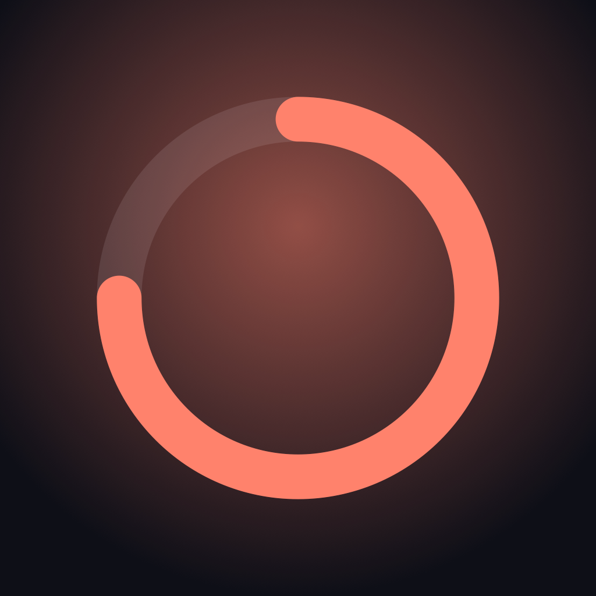
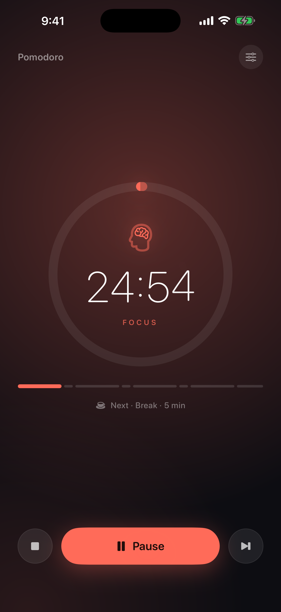
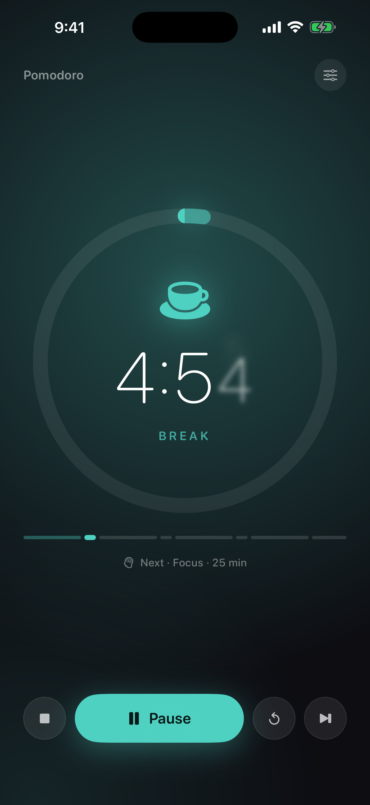
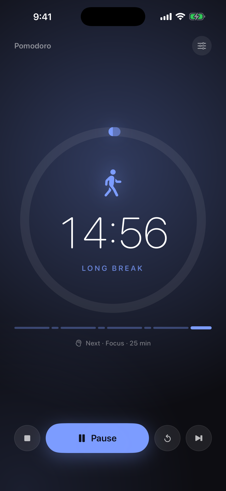
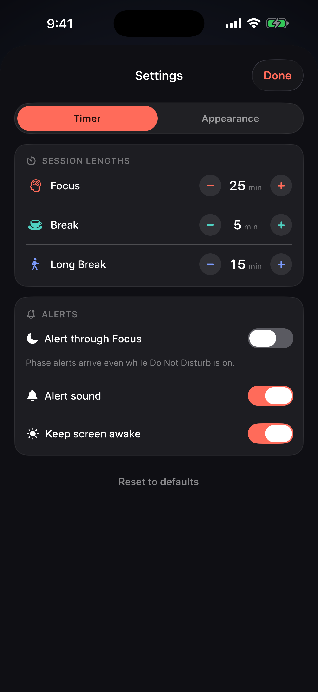
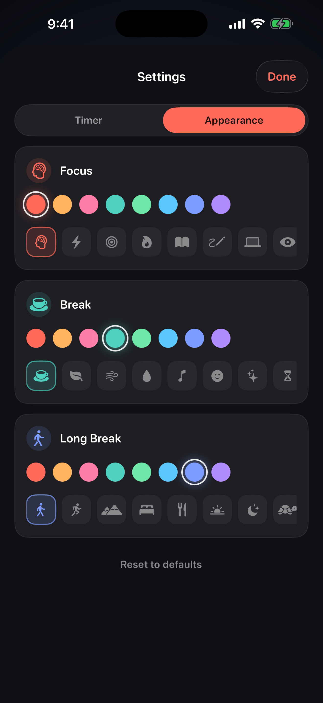

A quiet focus timer that runs the whole working session for you.





Cadence runs a full cycle and then starts it again, so you are not reaching for your phone between every round.
The clock is anchored to a date, not to a ticking counter. Lock your phone, switch apps, even force-quit — come back and it is exactly where it should be.
Every phase change is scheduled the moment you press start, so alerts arrive on time with the app closed — and during a Focus, if you want them to.
A Live Activity shows the countdown and ring on the Lock Screen and in the Dynamic Island. On a charger, sideways, StandBy turns it into a desk clock.
Sensible defaults, then everything worth changing is one tap away in two tidy tabs.
Focus from 5 to 90 minutes, short break 1 to 30, long break 5 to 60.
Eight accents per phase. The whole screen follows the one you pick — ring, glow, buttons, Live Activity.
A symbol set chosen to suit each phase, tinted to match your colour.
Pause with a tap on the dial, restart just the current phase, skip ahead, or stop back to the top of the cycle.
Start, pause and stop from Siri or Shortcuts. Put “Start or Pause” on the Action Button and begin without unlocking.
A proper landscape layout, not a stretched portrait one. Dark by design, easy on the eyes at night.
Cadence has no network code at all. No account, no analytics, no crash reporting, no advertising identifiers. It stores three things on your device: when the current session started, whether it is running, and your settings. Read the full privacy policy — it is short.